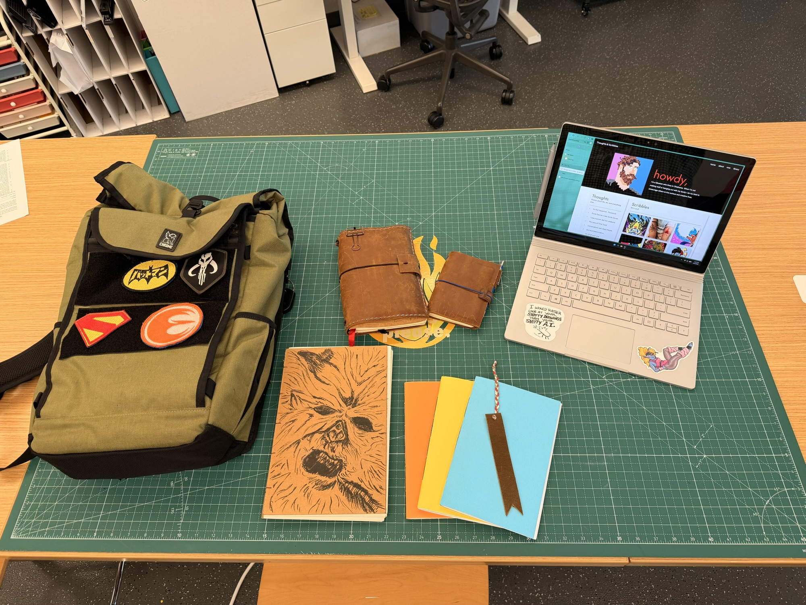

Making Stuff

I’ve been experimenting with leather working and book binding. While I like using technology, I often find myself code-switching between pen and paper and blinking cursors on a screen. Maybe it’s a Xennial mindset that comes from a prefrontal cortex that developed in both pre/post internet worlds, but I love a good notebook as much as I love my laptop.
For several years now I’ve been using a refillable traveler’s notebook from September Leather. I fell in love with being able to keep one notebook for both my work and personal life that also allowed separation between the two. The journal holds 3 slim notebooks within the leather cover – one for work, one for personal notes/journaling, and one for sketching and it’s simple to just swap them out as I fill them up.
For a while now the seed has been slowly germinating that I wanted to give the notebook some upgrades. The cover of my original notebook was great, but utilitarian and no more than a slab of leather sandwiching the notebooks in-between. What if I wanted to take my notebook to the bar? Book club? Book club at the bar? So I said to myself, “Self, we should upgrade the notebook with a pocket and some card slots.”


The Makerspace at my library has leather working tools, so I started small with another side project I’ve been kicking around in my head. I took some 1 inch belt blank that I had on hand from a cosplay project and made a bookmark with a couple of simple cuts. I punched a hole in the top and threaded a braid of yarn through it for a tassel. Small first steps like this always help to grease the wheels before approaching more intimidating projects.

With the journal I started by gathering and watching a playlist of tutorials about simple leather working projects on YouTube. The shared wisdom was to plan ahead with templates/patterns made with paper to help visualize the cuts and how it all goes together. I learn best by doing, so I dove right in after a few hours of planning and research. I wanted to upgrade to an A5 size, so I had to buy new leather, and some wax thread for the stitching. Everything else: the clips, the bungee cords, the silk ribbons, came from cannibalizing my September Leather journal.


Because I’m a “break stuff and fix it along the way” kind of learner, this build isn’t as clean as it could have been. My stitches aren’t always straight. It got disassembled/reconfigured when I decided that it would be better to put the wallet slots in the back instead of the front. I stacked that on top of the folder pocket – which meant I had to stitch 3 layers of leather together. A bit of an over-design, and not something I would do twice. Despite the flaws I’m pretty happy with it. Handmade things aren’t supposed to be perfect, anyway.
Even before it was done, I knew I wasn’t finished. My new journal would need new notebooks, and I can be particular about my paper. I ended up making two styles, but only one was actually for the notebook:


This 2nd style is what I will use for my notebooks moving forward. They use a saddle stitch and you can put one together in about 15 minutes from start to finish without any special tools or supplies. It was so easy, I plan on making an instructional zine that I’ll have at our craft programs to teach people how to do it.
I wish I could say I was done after the notebooks, but…I had some leather left an an idea of how to use it. I made one more memo-style journal wallet. This one I kept real simple, just punching holes for the elastic cords and gluing the pockets in place (I finally got some leather cement).


This experience was quite a journey for about a week and a half. I had been thinking about these projects for months, so once I started it all came rushing out of me at once. I couldn’t stop – I was swept up in a wave of manic energy where every free second was in devoted to the project. When I couldn’t work on it I was thinking about it. Pursuing creativity of any kind is as hard as it is rewarding. My hands have new calluses from working with unfamiliar tools, along with a few scratches and pokes earned along the way. Creativity is a blessing, but it can sometimes feel like addiction. Success makes you drunk with empowerment, while frustration and failure leave you feeling wrung out and hung over. But success or failure, the effort is worth it. The work is the reward.